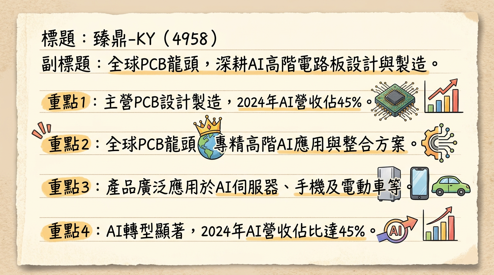
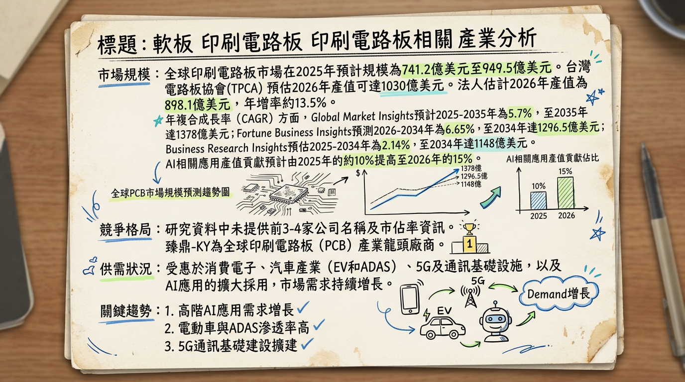
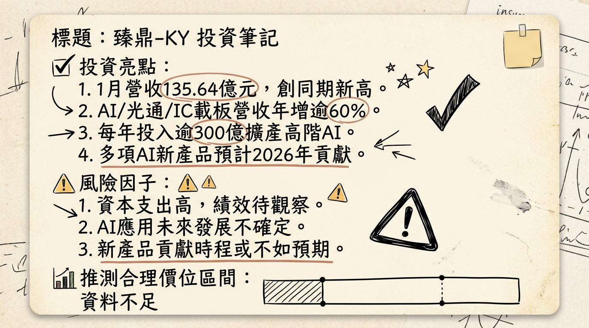

4958 臻鼎-KY 深度研究報告
產生時間：2026-03-06 01:14
一句話摘要
臻鼎-KY作為全球PCB龍頭，正憑藉鉅額資本支出（2026年預計逾500億台幣）與全球產能佈局，積極轉型聚焦高階AI伺服器、IC載板及AI終端應用，預期在2026年迎來數年高速成長，營收有望再創新高，並顯著優化產品組合與獲利能力。
公司概覽
臻鼎-KY（4958）隸屬於鴻海集團，為全球印刷電路板（PCB）產業的領導廠商，業務涵蓋從設計、製造到銷售各類PCB產品。公司正積極從傳統消費電子應用轉向高階AI應用領域。
核心產品/服務：
- 軟性印刷電路板（FPC）
- 高密度互連板（HDI）
- 類載板（SLP）
- IC載板 (ABF載板、BT載板)
- 高階硬板 (Intelligent HDI, iHDI, High Layer Count, HLC)
- 高階AI伺服器 (OAM/UBB技術整合方案)
終端應用：
智慧型手機、平板、穿戴裝置、PC、AI伺服器、基地台、AI加速器、光通訊、先進駕駛輔助系統（ADAS）、電動車、工醫領域、AI智慧眼鏡、AR/VR裝置、摺疊手機、人形機器人等。
營收結構分析 (按產品/應用類型)
| 業務類別 | 2023年營收佔比 | 2024年營收佔比 | 2025年前三季營收佔比 | 2025年預計營收佔比 | 備註 |
|---|
| 行動通訊（手機） | ~70% | - | 58% | - | 佔比已顯著下降 |
| AI相關產品 | 8% | 45% | - | 60% - 70% | 顯著成長動能，預計持續提升 |
| 軟板 | - | - | >70% | - | |
| 硬板 | - | - | <30% | - | |
| 硬板 - HDI | - | - | >15% | - | |
| 硬板 - IC載板 | - | - | - | >6% | |
| IC載板 - ABF | - | - | - | 8% - 9% | |
| IC載板 - BT | - | - | - | 1% - 2% | |
- 中國大陸： 五大基地22座廠房，秦皇島為BT載板主力，深圳為ABF載板主力。正擴建AI產品用高階HDI、HLC及去瓶頸高階軟板產能。
- 台灣（高雄AI園區）： 積極投入高階ABF載板與HLC+HDI產能，預計2025年底試產，2026年第一季打樣。軟板產線已小量生產，預計2026年第一季將放大產能，年產值可貢獻約NT$65-70億元。
- 泰國： 泰國一廠於2025年5月8日試產，2025年第四季小量產，已有重要客戶通過認證，預計2026年第二季滿產。二廠、三廠、五廠及機械鑽孔中心等四座廠房亦積極建設中。
- 淮安： 10個廠區動工建設，以AI硬板、伺服器板、光模塊增量為亮點。
- 印度： 作為輔助性生產據點。
- 產能目標： 公司目標在2030年左右，中國與非中國區域產能比重將達80:20。
所屬細分產業與相關題材：
印刷電路板（PCB）製造，涵蓋軟板、HDI、IC載板（ABF/BT載板）。相關題材包括：AI伺服器與高速運算、光通訊、先進封裝載板、AI終端應用（AI智慧眼鏡、AR/VR、摺疊手機、智慧駕駛、人形機器人）、電動車/車載。
核心競爭優勢
AI轉型策略領先： 臻鼎-KY快速從傳統手機軟板轉型，聚焦AI伺服器、高階IC載板（ABF/BT）、iHDI、HLC及OAM/UBB等高階AI應用，產品組合與市場趨勢高度契合。
鴻海集團綜效： 作為鴻海集團成員，在AI伺服器機櫃業務及關鍵客戶資源方面享有獨特優勢，有助於其快速取得AI供應鏈中的關鍵地位。
全球化產能佈局： 積極佈局中國、台灣、泰國等地的高階產能，特別是泰國廠作為MSAP光通訊產品線的唯一基地，以及高雄廠的ABF/HLC+HDI產能，強化區域供應鏈韌性與客戶服務能力。
高階技術與規模優勢： 在PCB半導體化趨勢下，高層數、高精密、高頻高速PCB的製造難度極高，臻鼎憑藉其全球龍頭的技術實力與大規模量產經驗，築起深厚的技術壁壘。
巨額資本支出鎖定AI商機： 每年投入逾300億元甚至2026年超過500億元的資本支出，顯示公司對AI市場的高度信心與搶佔先機的決心，確保其高階產能的領先地位。
財務分析
月營收趨勢
| 月份 | 金額 (新台幣億元) | 月增率 (MoM) | 年增率 (YoY) | 備註 |
|---|
| 2026年1月 | 135.64 | -29.80% | +0.71% | 創歷年同期新高 |
| 2025年12月 | 193.21 | +6.62% | +22.70% | 創歷年同期次高 |
| 2025年11月 | 181.21 | -6.73% | -6.76% | |
| 2025年10月 | 194.28 | +0.34% | -7.28% | 創2025年以來新高 |
| 2025年9月 | 193.62 | +32.15% | +0.13% | 創近10個月新高 |
| 2025年8月 | 146.51 | +9.13% | -17.75% | |
季度數據
| 季度 | 季營收 (新台幣億元) | 季增率 (QoQ) | 年增率 (YoY) | 毛利率 | 營業利益率 | EPS (新台幣元) | 備註 |
|---|
| 2025年Q4 | 568.7 | +20.06% | +1.31% | 未提供 | 未提供 | 未提供 | 創歷史單季新高 |
| 2025年Q3 | 473.66 | +23.98% | -6.41% | 22.00% | 9.56% | 2.46 | (以美元計 YoY+0.63%) |
| 2025年Q2 | 未提供 | 未提供 | 未提供 | 未提供 | 未提供 | 未提供 | |
| 2025年Q1 | 未提供 | 未提供 | 未提供 | 未提供 | 未提供 | 未提供 | |
| 2024年Q4 | 未提供 | 未提供 | 未提供 | 18.90% (全年) | 未提供 | 9.67 (全年) | |
年度趨勢
- 2025年全年營收： 新台幣1,825.22億元，年增6.33%，連續刷新年度營收新紀錄。
- 2025年全年EPS： 截至2025年前三季為新台幣3.79元（全年數據未提供）。
- 2024年全年EPS： 新台幣9.67元。
法說會重點
最近一次預告法說會： 2026年3月12日 (將公布2025年度合併財務報告並說明營運成果與展望)。
管理層發言與指引 (綜合近期法說會及新聞資訊)：
- 高階AI應用為核心驅動力： 2026年1月，高階AI產品需求帶動伺服器/光通訊與IC載板營收年增率雙雙超過六成，並續創單月新高，顯示營收結構轉型效益持續發酵。
- 四大應用加速成長： 預期2026年行動通訊、電腦消費、伺服器/車載/光通訊以及IC載板等四大應用領域的營收將全面加速成長。
- AI伺服器： 客戶下一世代平台逐步進入量產，AI伺服器相關營收將於2026年開始放大，並在2027年進入倍數成長。
- IC載板： 受惠於新產能開出以及ABF載板在AI算力相關大尺寸產品的需求，預期2026年營收貢獻將逐季大幅攀升。
- AI終端應用： AI手機、折疊機與AI眼鏡等新興應用將有明顯成長機會，多項新產品貢獻預計在2026年逐步顯現。
- 營運展望： 董事長沈慶芳表示，受惠高階AI應用需求延續、客戶規格升級帶動價量齊揚，以及新產能與新產品陸續貢獻，公司有信心將進入數年高速成長階段，2026年全年營收有望再創新高。
產能利用率與資本支出：
- 資本支出： 2025年及2026年的資本支出規劃皆超過新台幣300億元，其中2026年預計將達新台幣500億元以上。近五成將用於擴大高階HDI與HLC產線，以掌握AI應用成長契機。
- 產能擴充：
* 淮安與泰國園區積極擴充iHDI與HLC產能，淮安廠區iHDI與HLC產能至2026年底將較現在翻倍成長。
* 泰國一廠逐步量產爬坡中，預期2026年第二季達到滿產。目前泰國二廠、三廠、五廠、機械鑽孔廠四座廠房同步建置中。
* 高雄AI園區之高階ABF載板與iHDI+HLC產能陸續裝機試車，將於2026年第一季進入打樣階段。
- 產能利用率： 最新數據未提供，但高階產品線預期將受惠於強勁需求。
券商觀點
| 券商名 | 目標價 (新台幣元) | 評等 | 日期 | 備註 |
|---|
| 美系外資 | 220 | 買進 | 2025/09/11 | 目標價由160元調高 |
| FactSet (預估) | 187.5 | - | 2026/02/09 | 最新調查預估均值，非單一券商評等 |
| 理財周刊報導外資 | 215 | 買進 | 2025/10/21 | 重申「買進」評等，目標價由160元調高 |
- 2025年EPS預估： 多家法人機構預估約在新台幣6.95至7.82元之間。
- 2026年EPS預估： 多家法人機構預估更可望挑戰新台幣10.78元至10.86元。
財報深度分析
利潤率趨勢
| 季度 | 毛利率 | 營業利益率 | 稅後淨利率 |
|---|
| 2025年Q3 | 22.00% | 9.56% | 7.58% |
| 2025年Q2 | 未提供 | 未提供 | 未提供 |
| 2025年Q1 | 未提供 | 未提供 | 未提供 |
| 2024年Q4 | 18.90% (全年) | 未提供 | 未提供 |
- 產品組合優化： 營收結構從手機軟板（2025年前三季佔比58%）轉向高階AI應用（2025年預估佔比達60%-70%），高毛利的iHDI、HLC、ABF載板等產品比重提升，有助於長期毛利率改善。
- 折舊費用增加： 2025年Q3毛利率年減0.5個百分點，主因持續投資AI算力相關產能，導致折舊/營收占比較去年同期增加0.6個百分點。隨著新產能陸續開出，初期折舊費用壓力將持續存在。
- 匯率波動影響： 2025年前三季因匯兌損失約新台幣10億元，導致歸屬於母公司之淨利年減24.6%。若以美元計算，2025年Q3營收年增0.6%，但以新台幣計價則年減6.4%，顯示匯率對盈餘影響顯著。
存貨與營運
| 季度 | 存貨週轉天數 | 應收帳款週轉天數 |
|---|
| 2025年Q3 | 47.00 | 45.96 |
| 2025年Q2 | 47.55 | 47.29 |
| 2025年Q1 | 45.75 | 58.55 |
| 2024年Q4 | 43.11 | 52.37 |
- 存貨分析： 存貨週轉天數從2024年Q4的43.11天微幅上升至2025年Q3的47.00天，趨勢相對穩定，目前未見異常堆積或過度備料現象。
- 應收帳款分析： 應收帳款週轉天數在2025年Q1達到58.55天後，逐步下降至Q3的45.96天，顯示公司收款效率有所改善。
資本支出
- 近3年資本支出金額與趨勢： 臻鼎正處於成立以來最大規模的產能擴充期。
* 2025年：超過新台幣300億元
* 2026年：預計達新台幣500億元以上
*
投入方向： 近50%將用於擴大高階HDI、HLC產能，以及AI硬板、高階載板相關產能。
* 地區布局與效益：
* 淮安園區： 2025下半年至2028年投入人民幣80億元（約NT$335億元）擴充MSAP、HDI、HLC等高階產能。iHDI與HLC產能至2026年底將較現在翻倍。
* 泰國巴真府新廠： 一期2025年5月8日試產，下半年小量產；二期同期動土。泰國廠為MSAP光通訊產品線的唯一基地。泰國二、三、五廠及機械鑽孔廠同步建置中。預計泰國與高雄新廠效益於2026-2027年逐步發酵。
* 高雄AI園區： 投入新台幣80億元及20億元建置先進封裝ABF載板與HLC+HDI硬板產能。2025年底試產，2026年Q1進入打樣階段。高雄廠ABF載板滿載後預計一年可帶來NT$65-70億元營收。
股權異動
- 董監事/大股東申報轉讓紀錄： 未找到2025-2026年的最新資料。
- 庫藏股買回紀錄： 未找到2025-2026年的最新資料。
- 可轉換公司債（CB）：
*
2025年海外第五次無擔保轉換公司債： 於2025年9月18日完成訂價，募資4億美元（約NT$120.3億元），2025年9月25日發行，新加坡交易所掛牌。零票面利率，5年期，殖利率1.75%，轉換價格NT$186.45元，轉換溢價率10%。資金用於補充營運資金及償還借款。
* 轉換狀況： 截至2026年3月3日，已有債權人申請轉換32,258股普通股，於2026年3月9日起上市買賣。
* 2024年1月亦曾成功發行4億美元海外可轉換公司債。
- 現金增資或減資計畫： 目前未提及明確計畫。
- 股利政策：
*
2025年度： 擬配發每股現金股利NT$4.80元 (除息交易日2025年6月12日)。
* 2024年度： 配發每股現金股利NT$3.28元 (除息交易日2024年6月6日)。
* 近年主要以發放現金股利為主。
產業分析
產業數據
* 2025年全球PCB市場預計規模介於741.2億美元至949.5億美元。
* Global Market Insights預計2025年市場規模802億美元，2035年達1378億美元，CAGR 5.7%。
* Fortune Business Insights預測2026年774.5億美元增長到2034年1296.5億美元，CAGR 6.65%。
* 台灣電路板協會（TPCA）預估2026年全球PCB產值可達1030億美元，創歷史新高。
* 法人估計2026年全球PCB產值可達898.1億美元，年增13.5%，其中AI相關應用產值貢獻將由2025年的10%提高至2026年的15%-20%。
* 高多層印刷電路板（HLC PCB）市場2025年估值114.1億美元，2026年預計增長至118.6億美元，CAGR 4.44%，預計2032年達154.8億美元。
*
高階AI相關PCB： AI伺服器、800G高速交換器、ASIC晶片需求強勁，帶動HLC、HDI、ABF載板需求同步升溫，相關高階材料持續供不應求。業界預計2026年景氣持續強勁，成長動能集中於AI。
* ABF載板： 高盛預計供應吃緊逐月惡化，供需缺口2026年下半年達10%，2027年21%，2028年42%，預示價格看漲。儘管整體產能仍多，但高層數ABF載板在AI帶動下可望於2026年達到供需平衡。
* 軟板： 受手機市場疲弱影響仍處弱勢，僅蘋果摺疊手機、智慧眼鏡等題材支撐。
* 車用PCB： 短期難以翻轉，面臨砍價壓力。
- 產業平均毛利率水準： 未找到2025-2026年全球或台灣PCB產業平均毛利率具體數據，但高階產品佔比提升顯著優化獲利結構。例如，台光電2025年Q3毛利率30.1%，金像電2025年Q3毛利率35.6%，欣興預估2026年Q1毛利率優於上季（15.8%）。
競爭格局
全球前5大公司及其市佔率： 目前未找到2025-2026年具體排名與市佔率。然而，在AI伺服器、高階運算等領域，台系廠商扮演關鍵角色。
| 公司名稱 | 國家/地區 | 主要優勢/產品 |
|---|
| 臻鼎-KY (4958) | 台灣 | 各類PCB設計、製造與銷售，聚焦高階AI應用領域，涵蓋FPC、HDI、SLP、IC載板、HLC、AI伺服器OAM/UBB整合方案。 |
| 欣興 (3037) | 台灣 | IC載板龍頭，尤其在ABF載板領域居領先地位，受惠AI與HPC需求強勁。 |
| 金像電 (2368) | 台灣 | 全球伺服器PCB龍頭之一，專注高階伺服器、AI伺服器及網通設備用高層數多層板、HDI板。 |
| 華通 (2313) | 台灣 | HDI龍頭，手機、網通、伺服器應用。 |
| 健鼎 (3044) | 台灣 | 記憶體模組、面板相關PCB及AI伺服器用板。 |
| 揖斐電 (IBIDEN) | 日本 | 日本大廠，高階ABF載板，規劃擴大資本支出。 |
| 公司代號 | 公司名稱 | 2025年營收 (估計) | 2025年毛利率 (估計/已公布) | 2026年EPS (估計) | 備註 |
|---|
| 4958 | 臻鼎-KY | 1,825.22億元 | Q3: 22.00% | 10.78-10.86元 | 全球PCB龍頭，AI應用佔比高，鉅額資本支出擴充高階產能。 |
| 3037 | 欣興 | 未提供 | Q4: 15.8% (Q1'26預期優於Q4) | 未提供 | IC載板龍頭，AI相關產品比重可望提高到60%以上。 |
| 2368 | 金像電 | 未提供 | Q3: 35.6% | 32元 | 伺服器PCB龍頭，AI浪潮下產品結構優化，獲利成長顯著。 |
| 2383 | 台光電 | Q3: 251億元 | Q3: 30.1% | 62元 | CCL大廠，受惠AI伺服器、800G交換器等高階應用需求，獲利優化。 |
| 2313 | 華通 | 未提供 | 未提供 | 未提供 | HDI龍頭，手機、網通、伺服器應用。 |
| 3044 | 健鼎 | 未提供 | 未提供 | 未提供 | 記憶體模組、面板相關PCB及AI伺服器用板。 |
產業趨勢
AI伺服器與高速運算需求帶動高階PCB技術升級：
* 具體影響： AI伺服器設計複雜化，GPU、CPU與交換晶片數量大增，推升PCB用量、層數（18層以上，甚至30-50層）與材料等級。這加速了對iHDI、HLC、高頻高速低損耗材料（M8、M9等級CCL）的需求。
先進封裝技術（CoWoS、HBM）對IC載板的需求：
* 具體影響： AI高速運算推動先進封裝，帶動對IC載板（特別是ABF載板）的需求。AI晶片大型化也促使載板規格進化。HBM記憶體與CoWoS技術緊俏，使載板材料成為關鍵瓶頸。
電子產品小型化與多功能整合趨勢：
* 具體影響： 消費性電子（AI手機、摺疊手機、穿戴裝置）、IoT裝置和汽車電子（ADAS、電動車）追求輕薄高效，促使PCB朝向更高密度互連（HDI）、多層化、軟性（FPC）及軟硬結合板發展。
對臻鼎-KY的具體機會和威脅
*
高階AI應用領域領先： 臻鼎產品組合高度契合AI趨勢，特別在iHDI、HLC、ABF載板、OAM/UBB整合方案方面具備競爭力，有望受益於AI晶片及伺服器需求的強勁成長。
* 鴻海集團資源整合： 在AI伺服器機櫃業務及客戶資源上享有獨特優勢。
* 產業地位鞏固： 在高階PCB製造領域的技術與製程能力構成高進入障礙，鞏固其龍頭地位。
*
材料供應與成本壓力： 高階玻纖布、銅箔基板等材料供不應求，可能推升生產成本。
* 非高階產品線競爭： 軟板及車用PCB市場面臨競爭與砍價壓力，若非高階產品佔比未能快速降低，可能影響整體獲利。
* 鉅額資本支出壓力： 持續的技術升級與產能擴充需要巨額資本支出，初期折舊費用增加會壓縮利潤率。
* 匯率波動： 匯兌損失對獲利能力有顯著影響。
相關投資題材的具體連結
AI (人工智慧)： AI伺服器與AI加速器、AI智慧眼鏡、AR/VR、摺疊手機、人形機器人等，皆是臻鼎高階PCB（HLC、iHDI、ABF、FPC）的核心應用領域。
HBM (高頻寬記憶體)： HBM的發展直接推動先進封裝技術及IC載板（特別是ABF載板）的需求，臻鼎在載板領域的布局將直接受惠。
電動車（EV）與先進駕駛輔助系統（ADAS）： 增加車載電子系統複雜性，對高可靠性、小型化PCB需求增加。臻鼎透過併購切入車用/工醫感測器/模組，強化AI車用能力。
5G與高速通訊： 5G基礎設施、數據中心、800G高速交換器等對高頻高速、低損耗PCB的需求不斷提升，臻鼎的MSAP高階製程技術能滿足此需求。
近期催化劑
- 2026年3月12日： 召開2025年第四季暨全年線上法人說明會，預計提供2026年具體營運指引。
- 2026年2月： 董事長沈慶芳指出AI終端應用（AI智慧眼鏡、AR/VR、折疊機、智慧駕駛、人形機器人）在新產品貢獻下將於2026年逐步顯現。
- 2026年1月： 合併營收135.64億元，年增0.71%，創歷年同期新高；AI伺服器、光通訊與高階IC載板營收年增率雙雙超過六成，續創單月新高。
- 2025年12月1日： 與尖點科技簽署戰略合作協議。
- 2025年12月： 法說會指出2025-2026年每年逾300億元資本支出，近半用於高階HDI與HLC產線擴充。
- 2025年9月： 完成第5次海外可轉換公司債訂價，募資4億美元，用於高階產品開發與營運資金。
- 三大法人買賣超 (2026年3月3日-5日)：
* 3/3：買超1,975張 (外資買超2,249張，投信賣超9張，自營商賣超264張)。
* 3/4：買超2,418張 (外資買超2,955張，投信買超7張，自營商賣超544張)。
* 3/5：賣超6,201張 (外資賣超5,330張，投信賣超797張，自營商賣超74張)。
⭐ 成長動能時間軸
| 時間點 | 成長動能 |
|---|
| 2025年Q4 | - 泰國一廠進入小量產，伺服器及光通訊領域重要客戶通過認證。 <br> - 高雄AI園區高階ABF載板與HLC+HDI產能進入試產。 |
| 2025年至今 | - ABF載板來自AI資料中心應用的客戶打樣需求明顯增加，特別是AI算力相關大尺寸產品。 |
| 2026年Q1 | - 高雄AI園區高階ABF載板與iHDI+HLC產能進入打樣階段。 <br> - 高雄軟板產線放大產能。 |
| 2026年H1 | - 秦皇島廠區BT載板擴產（預留30%樓地板面積）。 |
| 2026年Q2 | - 泰國一廠預期可達到滿產。 |
| 2026年全年 | - AI伺服器客戶下一世代平台逐步進入量產，AI伺服器相關營收將開始放大。 <br> - IC載板營收貢獻將逐季大幅攀升（新產能+ABF大尺寸需求）。 <br> - AI手機、折疊機與AI眼鏡等AI終端應用有明顯成長機會，新產品貢獻逐步顯現。 <br> - 高階AI應用需求延續、客戶規格升級帶動價量齊揚，以及新產能與新產品陸續貢獻，全年營收有望再創新高。 <br> - AI相關營收佔比預計從2024年的45%進一步提升。 |
| 2026年底 | - 淮安廠區iHDI與HLC產能將較現在翻倍成長。 |
| 2025-2026年 | - 資本支出規劃皆超過新台幣300億元，其中2026年預計將達500億元以上，近50%用於擴大高階HDI、HLC及AI硬板、高階載板產能。 <br> - 中國淮安、泰國兩地合計10座廠房同時興建。 |
| 2027年起 | - AI伺服器相關營收進入倍數成長階段。 |
2026 展望
成長動能：
- AI應用爆發性成長： AI伺服器、光通訊、IC載板（特別是ABF）及AI終端應用（智慧眼鏡、AR/VR、摺疊機、人形機器人）需求持續強勁，將是營收與獲利的核心驅動因子。管理層預期AI應用營收佔比將從2024年的45%進一步躍升，目標2025年超過70%。
- 鉅額資本支出與產能釋放： 2025-2026年投入逾新台幣300-500億元的資本支出，主要用於擴建高階HDI、HLC及ABF載板產能於淮安、泰國及高雄等地，預計新產能將於2026-2027年陸續到位並貢獻營收，確保公司在AI供應鏈中的領先地位。
- 產品組合持續優化： 隨著高毛利AI相關產品佔比提升，將有助於公司擺脫過去手機軟板毛利率較低的壓力，優化整體獲利結構。
- 產業龍頭技術壁壘： 在高層數、高精密、高頻高速PCB製造領域的深厚技術與製程能力，加上鴻海集團資源整合，將鞏固其市場領導地位。
- 量化目標： 管理層與法人機構普遍預期2026年全年營收有望再創新高，法人預估EPS上看新台幣10.78元至10.86元。
風險：
- 匯率波動風險： 新台幣升貶值對營收及獲利（尤其是業外匯兌損益）影響顯著，如2025年前三季因匯損約10億元導致淨利年減。
- 高階材料供需與成本壓力： 高階玻纖布、CCL等AI關鍵材料持續供不應求，可能導致材料成本上升或影響產能。
- 鉅額資本支出後的折舊壓力： 雖然投資是為未來成長，但前期高額的資本支出會帶來折舊攤銷費用的增加，短期內可能對毛利率和淨利率造成壓力。
- 非高階產品線的市場競爭： 雖然轉型AI，但部分傳統業務（如軟板受手機市場影響，車用PCB面臨價格戰）可能仍面臨較大的競爭壓力。
投資結論
臻鼎-KY正站在AI浪潮的核心，其積極的轉型策略和大規模資本佈局，使其成為未來數年AI PCB產業成長的關鍵受惠者。
AI轉型成果顯著，成長動力強勁： 公司已成功從傳統消費電子轉型，AI相關產品佔比快速提升，2026年AI伺服器、IC載板及AI終端應用將全面加速成長。此結構性轉變為未來高速成長奠定基礎。
全球化高階產能陸續到位，鞏固龍頭地位： 2025-2026年鉅額資本支出集中在高階HDI、HLC、ABF載板，於淮安、泰國、高雄等地擴建產能。這些新產能的釋放將確保臻鼎在全球AI供應鏈中的領先地位與供給能力。
獲利能力優化潛力高： 儘管短期面臨折舊壓力與匯率波動，但隨著高毛利AI產品比重持續拉升，以及新產能利用率逐漸飽和，長期毛利率與整體獲利能力將顯著改善。
高進入壁壘與集團綜效： 在高層數、高精密AI PCB的製造難度極高，臻鼎的技術優勢與鴻海集團的垂直整合資源，構築了堅固的競爭護城河。
估值吸引力： 綜合法人對2026年EPS預估為新台幣10.78元至10.86元，考量其在全球PCB產業的龍頭地位、AI帶來的爆發性成長潛力，給予20-25倍的預估本益比 (P/E)。
投資建議： 買進
目標價區間：新台幣215元至270元 (基於2026年EPS 10.78~10.86元，乘以20~25倍P/E)。
本報告由 AI 自動產生，資料來源為公開網路資訊，僅供參考，不構成投資建議。產生時間：2026-03-06 01:14
📊 資訊卡


